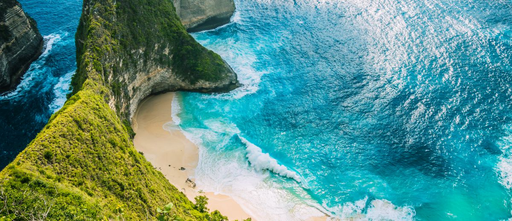
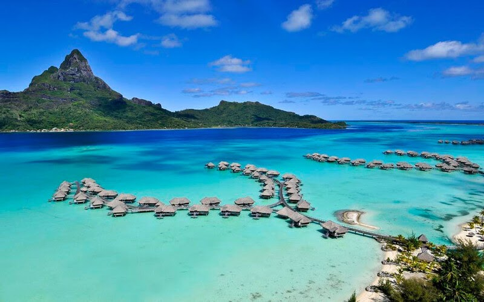
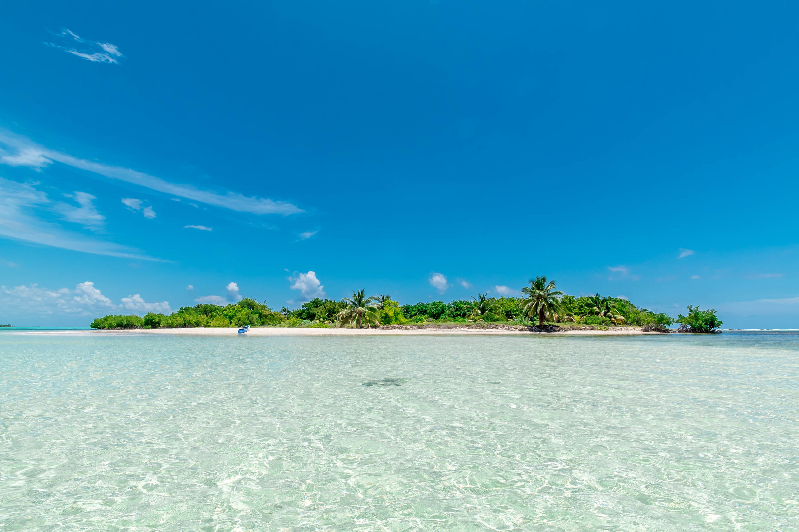
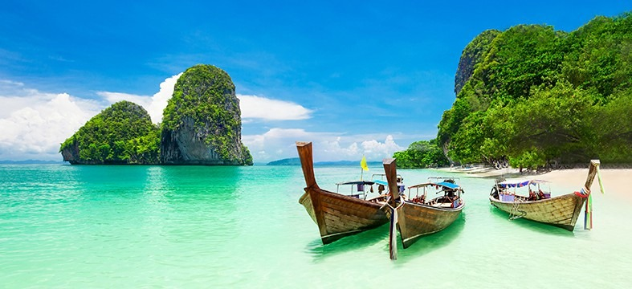
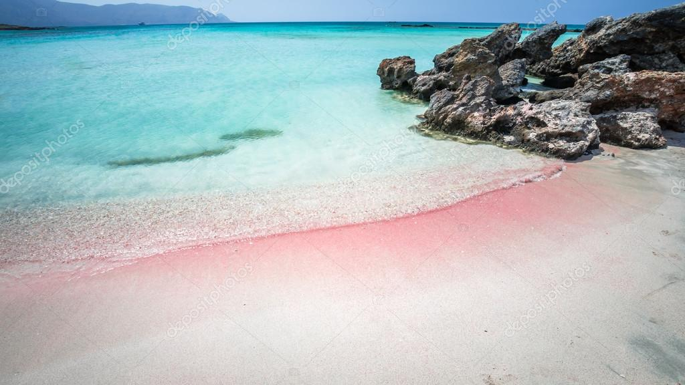
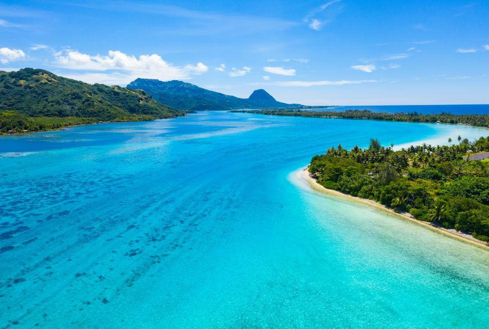
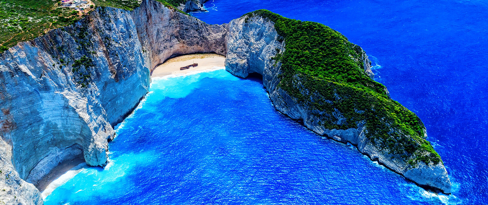

Gallery

Click to enlarge
Bali, Indonesia is famous for its beautiful beaches with crystal clear waters, white sand, and palm trees. Some of the most popular beaches in Bali include Kuta, Seminyak, and Nusa Dua.

Click to enlarge
Bora Bora, French Polynesia is renowned for its stunning beaches with turquoise lagoons, soft white sand, and overwater bungalows. Some of the most popular beaches in Bora Bora include Matira Beach, Motu Piti Aau Beach, and Toopua Beach.

Click to enlarge
The Cayman Islands in the Caribbean are known for their beautiful beaches with crystal clear waters, soft white sand, and palm trees swaying in the breeze. Some of the most popular beaches in the Cayman Islands include Seven Mile Beach, Rum Point Beach, and Governor's Beach.
Click to enlarge
Kauai, Hawaii is famous for its stunning beaches with golden sand, turquoise waters, and breathtaking landscapes. Some of the most popular beaches in Kauai include Poipu Beach, Hanalei Bay, and Tunnels Beach.
Click to enlarge
The Maldives is renowned for its breathtakingly beautiful beaches with powdery white sand, crystal clear turquoise waters, and vibrant coral reefs. Some of the most popular beaches in the Maldives include Veligandu Island Beach, Bikini Beach, and Maafushi Island Beach.

Click to enlarge
Phuket, Thailand is well-known for its stunning beaches with clear blue waters, soft sand, and picturesque scenery. Some of the most popular beaches in Phuket include Patong Beach, Kata Beach, and Nai Harn Beach.

Click to enlarge
Elafonisi Elafonisi is a small island located off the southwestern coast of Crete, Greece. It is known for its stunning beaches with crystal clear turquoise waters, pink sand, and shallow lagoons. The beach is surrounded by rare species of flora and fauna, making it a protected nature reserve.

Click to enlarge
Tahiti is famous for its idyllic beaches with crystal clear turquoise waters, white sand, and swaying palm trees. Some of the most popular beaches in Tahiti include Matira Beach, Temae Beach, and La Plage de Maui.
